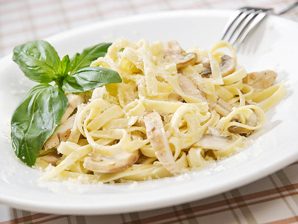

Chicken Alfredo

Description
This Chicken Alfredo features pasta drenched in an ultra-rich and creamy sauce, topped with juicy strips of seared chicken.
Ingredients
- Chicken
- Salt
- Pepper
- Paprika
- Olive Oil
- Water
- Fettuccine
- Garlic
- Butter
- Heavy Cream
- Nutmeg
- Parsley
Steps
- Cut chicken in half lengthwise to create two cutlets.
- Combine salt, pepper, and paprika in a bowl. Season both sides of the chicken with this mixture.
- Heat a skillet over medium heat. Once hot, add the olive oil. Add the chicken and cook until browned, about 5 to 6 minutes. Flip and cook another 5 to 7 minutes.
- Bring water to boil in a large pot. Add salt and stir to dissolve. Add pasta and cook about 10 to 12 minutes. Remove starchy pasta water. While pasta cooks, make alfredo sauce.
- Heat the skillet. Add butter. Once melted, add garlic and sautee until fragrant, 30 seconds. Add heavy cream, salt, and pepper. Stir to combine. Bring cream to simmer over medium heat. Cook, stirring frequently, scraping sides and bottom to make sure the cream does not curdle. Reduce the sauce, should take about 10 to 12 minutes.
- Turn off heat and stir in the parmesan cheese and nutmeg. If the sauce is too thick, add reserved pasta water until desired consistency is reached. Season with salt and pepper to taste.
- Add pasta to alfredo sauce, tossing to combine. Slice chicken against the grain into half inch pieces. Divide pasta among bowls and top with sliced chicken and parsley.